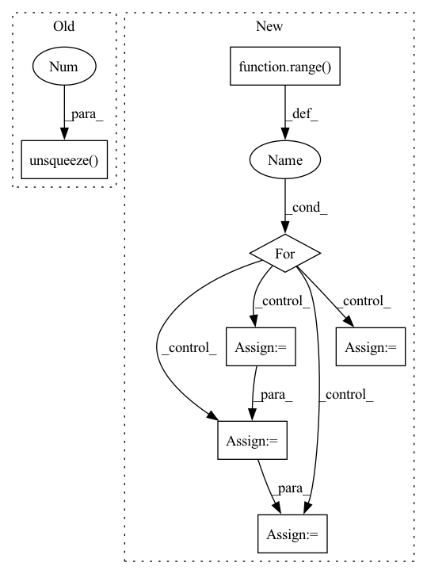

Pattern ID :20136
Before Change
def __getitem__(self, index):
neighbor = self.features[self.dst[self.src==self.mask[index]]]
return self.features[self.mask[index]].unsqueeze(-2), self.labels[self.mask[index]], neighbor.unsqueeze(-2 )
def download(self):
Download data if it doesn"t exist in processed_folder already.
print("Loading {} Dataset...".format(self.name))After Change
neighbors_khop = list()
ids_khop = [self.mask[index]]
//// TODO: simplify this process
for k in range( self.k_hop):
ids = torch.LongTensor()
neighbor = torch.FloatTensor()
for i in ids_khop:
//// save the index of neighbors
ids = torch.cat((ids, self.dst[self.src==i]),0)
neighbor = torch.cat((neighbor, self.get_neighbor(i)),0)
//// TODO random selection in pytorch is tricky
if ids.shape[0]>self.thres_nodes:
indices = torch.randperm(ids.shape[0])[:self.thres_nodes]
ids = ids[indices]
neighbor = neighbor[indices]
ids_khop = ids //// temp ids for next level
neighbors_khop.append(neighbor) //// cat different level neighbor
return self.features[self.mask][index].unsqueeze(-2), self.labels[self.mask][index], neighbors_khop
In pattern: SUPERPATTERN
Frequency: 3
Non-data size: 7
Instances Fragment ID: 65852910
Project Name: wang-chen/lgl
Commit Name: 36d1c2bea9ab66a4314e410accd13e606b234820
Time: 2021-02-04
Author: yuhengq@andrew.cmu.edu
File Name: datasets/continuumOGB.py
M Class Name: ContinuumOGB
N Class Name: ContinuumOGB
M Method Name: __getitem__(2)
N Method Name: __getitem__(2)
M Parent Class: VisionDataset
N Parent Class: VisionDataset
M File Name: datasets/continuumOGB.py
N File Name: datasets/continuumOGB.py
M Start Line: 48
M End Line: 49
N Start Line: 47
N End Line: 64
Before Change
def __getitem__(self, index):
neighbor = self.features[self.dst[self.src==self.ids[self.mask][index]]]
return self.features[self.mask][index].unsqueeze(-2), self.labels[self.mask][index], neighbor.unsqueeze(-2 )
def download(self):
Download data if it doesn"t exist in processed_folder already.
print("Loading {} Dataset...".format(self.name))After Change
k_ids = self.dst[self.src==index]
neighbors_khop = [neighbor]
//// TODO: simplify this process
for k in range( self.k_hop - 1):
k_id = torch.LongTensor()
k_neighbor = torch.FloatTensor()
for i in k_ids:
k_id = torch.cat((k_id, self.dst[self.src==i]),0)
k_neighbor = torch.cat((k_neighbor, self.get_neighbor(i)),0)
k_ids = k_id
neighbors_khop.append(k_neighbor)
return self.features[self.mask][index].unsqueeze(-2), self.labels[self.mask][index], neighbors_khop
else: Fragment ID: 65852911
Project Name: wang-chen/lgl
Commit Name: 4bfae9c01cc336d649f16073e598e3f2a8a8efe8
Time: 2021-01-22
Author: yuhengq@andrew.cmu.edu
File Name: datasets/continuum.py
M Class Name: Continuum
N Class Name: Continuum
M Method Name: __getitem__(2)
N Method Name: __getitem__(2)
M Parent Class: VisionDataset
N Parent Class: VisionDataset
M File Name: datasets/continuum.py
N File Name: datasets/continuum.py
M Start Line: 62
M End Line: 63
N Start Line: 73
N End Line: 91
Before Change
// Memory querying and responding for visual features
dummy_memory_matrix = self.memory_matrix.unsqueeze(0 ) .expand(att_feats.size(0), self.memory_matrix.size(0), self.memory_matrix.size(1))
responses = self.cmn(att_feats, dummy_memory_matrix, dummy_memory_matrix)
max_num_protype = max((labels[:,-1]*3 + labels[:,:-1].sum(-1))) * self.num_prototypeAfter Change
query_matrix = self.memory_matrix.new_zeros(att_feats.size(0), max_num_protype, self.memory_matrix.shape[-1])
cmn_masks = self.memory_matrix.new_zeros(query_matrix.shape[0], att_feats.size(1), max_num_protype)
for i in range( att_feats.size(0)):
cur_query_matrix = []
//print(labels[i])
for j in range(len(labels[i])):
if labels[i, j] == 1:
if j != len(labels[i])-1:
cur_query_matrix.extend(self.memory_matrix[j*self.num_prototype:(j+1)*self.num_prototype, :])
else:
cur_query_matrix.extend(self.memory_matrix[j * self.num_prototype:, :])
cur_query_matrix = torch.stack(cur_query_matrix, 0)
//print("111",query_matrix[i, :cur_query_matrix.shape[0], :].shape, cur_query_matrix.shape)
query_matrix[i, :cur_query_matrix.shape[0], :] = cur_query_matrix
cmn_masks[i, :, :cur_query_matrix.shape[0]] = 1
responses = self.cmn(att_feats, query_matrix, query_matrix, cmn_masks)
Fragment ID: 65852915
Project Name: markin-wang/xpronet
Commit Name: 947c6bd650f8ff11d6c2f9a12f79d265c1f384ce
Time: 2021-11-23
Author: cserwj@gmail.com
File Name: modules/base_cmn.py
M Class Name: BaseCMN
N Class Name: BaseCMN
M Method Name: _prepare_feature_forward(5)
N Method Name: _prepare_feature_forward(5)
M Parent Class: AttModel
N Parent Class: AttModel
M File Name: modules/base_cmn.py
N File Name: modules/base_cmn.py
M Start Line: 400
M End Line: 401
N Start Line: 404
N End Line: 422